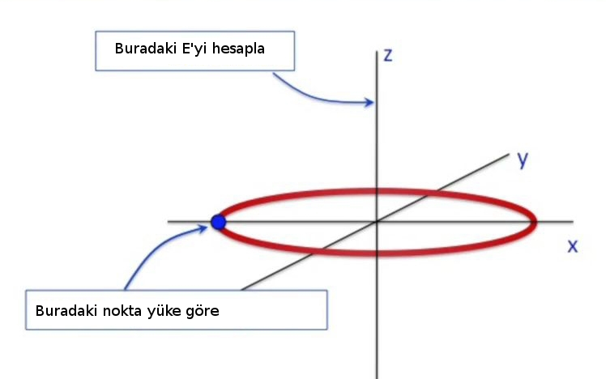
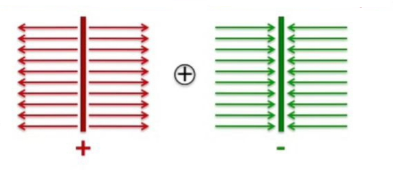

Elektrik ve Manyetik Etkileşimler - Ders 6
Bugün önceki derste öğrendiğimiz kavramları farklı şekiller üzerinde uygulayacağız. Bu şekiller içi boş çember / halka, içi dolu halka ya da disk, sonsuza giden bir düzlem (alttaki resim, soldaki şekil, düzleme kenarından bakılırsa), ve sonsuza giden iki düzlem.

Daha önce bir noktasal yükün $1/r^2$'e oranlı olarak azaldığını görmüştük. Sonsuz uzunluktaki bir çizgi yükünün $1/r$'ye oranlı azaldığını da gördük (burada $r$ çizgiye olan uzaklık). Peki acaba sonsuz bir düzlemin azalma oranı ne olurdu? Belki sabittir (aslında öyle). Ama bunu hesaplayarak göreceğiz.
İlk önce bir halkanın elektrik alanını hesaplayacağız, sonra disk, diski yaptıktan sonra onun alanının sonsuza gittiği duruma bakacağız ve bu sonsuz düzlem olacak.
Halkayı hesaplamak için onu $x-y$ düzlemine yatıracağım, ve tam ortasından $z$ çıkıyor olacak, halkanın yarıçapı $a$. Sonra simetrisi yüksek bir nokta bulacağım, ki $z$ ekseni üzerindeki tüm noktalar böyledir, ve tüm bu $z$ noktaları için elekrik alanı hesaplayacağım.
İlk adım halkayı bir sürü ufak nokta yüküne bölmek. Sonra bu noktalardan birini seçiyorum, mesela en soldaki noktadaki yüke göre $z$'deki bir yerde oluşan elektrik alanını hesaplamak istiyorum.

Yaklaşım böyleydi hatırlarsak, problemi çözmeyi bildiğimiz ufak parçalara bölüyoruz, ki burada bildiğimiz şey nokta yük, ve sonra oradan toplama bakıyoruz.
Şimdi çok dikkatli bir şekilde bir diyagram çizmemiz lazım, sonra bu diyagramı yine dikkatli bir şekilde matematiğe çevireceğiz.

Nokta yük alan hesabı için $|r|$ ve $\hat{r}$ lazım. Dikkatle çizdiğimiz
diyagram burada faydalı işte, $r =
Buradan $r$'nin büyüklüğünü hesaplamak kolay,
$$ |r| = (a^2 + z^2)^{1/2}$$
$\hat{r}$'yi hesaplamak için $r$'yi alıyorum ve yine $r$'nin büyüklüğüne bölüyorum,
$$ \hat{r} = \vec{r} / |r| = \frac{ < a,0,z > }{(a^2 + z^2)^{1/2}} $$
$<0,0,z>$ noktasının hissettiği elektrik alanı nokta yük hesabı ile bulurduk, bu alan hesabı nasıldı? Yuk $<-a,0,0>$'da, ve $<0,0,z>$'deki $E$,
$$ E = \frac{1}{4\pi\epsilon_0 } \frac{q}{|r|^2}\hat{r} $$
Formulde $\hat{r}$'yi yerine koyarsak,
$$ E = \frac{1}{4\pi\epsilon_0 } \frac{q}{a^2 + z^2} \frac{< a,0,z >}{(a^2 + z^2)^{1/2}} $$
$$ = \frac{1}{4\pi\epsilon_0 } \frac{q}{(a^2 + z^2)^{3/2}} < a,0,z > \qquad (5) $$
Üzerinde nokta yükleri olan halkaya dönersek, bu halkanın ortasından $z$ kordinatı geçiyor, ve halkadaki yüklerin $z$ üzerindeki bir noktaya olan etkisini hesaplamak istiyoruz. Halkadaki her yükten bu noktaya doğru bir etki var, tüm bu etkileri düşünürsek ortaya bir köni çıkıyor sanki. Önemli bir nokta, koniyi oluşturan etki oklarının yatay bağlamda her birinin bir karşıtı var (simetrinin bu problemin bir parçası olduğunu unutmayalım) ve bu yatay etkiler birbirini yokediyor. Geri kalanlar sadece $z$ yönünde olan etkiler.
Bu tür simetri argümanı kullanmak bu arada matematiğimizi oldukca kolaylaştırır. Aslında tüm modeli kör bir şekilde yazıp iptallerin olduğunu orada görebilirdik, ama öncede simetri üzerinden bu iptali yapmak bizi bir sürü cebirsel ifadeden kurtarmış oldu.
O zaman toplam elektrik alan halka etrafından alınmış bir toplamdır, daha doğrusu halka etrafında dönerken görülen ufak elektrik alan etkilerinin toplamıdır.
$$ \vec{E}{tot} = \sum{\textrm{halkanın etrafında}} \Delta E_z \hat{z} \qquad (2) $$
Bize lazım olan $E$'nin $z$ yönündeki bileşenleri.
$$ \Delta E_z = \frac{1}{4\pi\epsilon_0 } \frac{z \Delta Q}{(a^2 + z^2)^{3/2}} \qquad (3) $$
Görüldüğü gibi $Q$ yerine $\Delta Q$ kullandık çünkü halkanın tek bir parçasına bakıyoruz.
Entegrali nasıl oluştururuz? Bize lazım olan
$$ \sum \Delta Q \to \int \mathrm{d} \theta $$
Bu toplam için hakikaten Kartezyen kordinatları kullanmak istemiyorum. Problemi tanımlamakta tam bir özgürlüğe sahibiz, sistemi tanımlarken ne sistem içinde ne sistem dışında bunları hep tanımlamak bizim elimizde. Problemin kordinat sistemini tanımlamak ta bizim elimizde. Bu örnekte mesela üstteki entegrali hesaplamanın en rahat yolu $x,y,z$ kordinatı kullanmak değil, elimizde bir çember var, o çember etrafında dönmek için tek bir değişken, açı $\theta$'yi kullanmak daha kolay, böylece o tek değişkeni değiştirerek çember etrafında dönebilirim. Bu amaçla kutupsal kordinat kullanıyoruz.
Entegrali nasıl hazırlarız? Sonsuz çizgidede yük hesabı için entegral alırken ne yaptığımızı hatırlayalım: çizgiyi $\Delta x$ büyüklüğünde ufak parçalara böldük, he parçanın yükü $\Delta Q$ idi. Sonra $\Delta q$ toplamlarından $Q/L$ çarpı ufak mesafeler $\Delta x$ toplamlarına nasıl geçileceğini gösterdik.

Yeni problem için buna benzer bir şeye ihtiyacımız var. Ufak $q$'ler toplamından, bir şekilde, birim mesafe üzerindeki yüklerin mesafeler üzerinden alınan toplamına (entegraline) geçmeliyiz. Yani toplam alırken değiştirilen şey mesafe olmalı, yük değil.
$$ \Delta Q = \frac{q}{L}\Delta L = \frac{q}{2\pi L}\Delta L \qquad (1) $$
Üstteki $\Delta L$'yi $\theta$'lar bazında istiyoruz. Üstteki örnek için ufak mesafeler halka etrafında olacak, ve halkanın etrafında tamamen dönmemiz gerekecek.

$\theta$'lar üzerinden bir entegrale ihtiyacımız var demiştik, o zaman üstteki şekildeki $L,\theta$ gibi kavramları yerine koymamız lazım. Tüm uzunluk $L$ nedir? Cevap çember formülünden geliyor, $L = 2\pi a$, ki $a$ yarıçap. Peki ufak bir $\Delta \theta$ için uzunluk ne olacak? Önceki $L$ formülünü tüm $2\pi$ onun ufak bir parçası $\theta$ için adapte edebilir miyiz acaba?
$$ \Delta L = a \Delta \theta $$
olabilir mi? Bu mümkün, eğer $\pi/2$ dönsek, bu bize $L/2$ vermez miydi? Evet! Ama yine de ufak açı değişimleri üzerinden entegral kontrolü yapalım,
$$ \sum \Delta L \to a \int_{0}^{2\pi} \mathrm{d} \theta = 2\pi a = L $$
İfade doğru demek ki. Üstteki hesapta sinüs, kosinüs kullanılmamış olmasına dikkat. Şimdi biraz önceki $\Delta L$'yi (1)'e koyabiliriz,
$$ \Delta Q = \frac{q}{2\pi a} a \Delta \theta = \frac{q}{2 \pi} \theta $$
ve
$$ \sum \Delta Q \to \frac{q}{2\pi} \int_{0}^{2\pi} \mathrm{d} \theta $$
Böylece artık elimizde tüm gerekli bileşenler var. Baktığımız noktadaki toplam yük $\vec{E}_{tot}$, $\Delta E_z$'ler üzerinden bir toplam, bkz (2) ve (3), ve bu $\Delta E_z$'ler $\Delta Q$'lere bağlı, ve nihai toplam $\Delta Q$ üzerinden toplama dönüştüğünde toplamın hangi değere yaklaştığını biraz önceki entegral üzerinden bulabiliriz. Tabii sadece $z$ bileşeninin sağ kaldığını unutmayalım, diğerleri birbirini iptal etti.
(2) ve (3)'ü birleştirelim,
$$ E_{z}^{tot} = \frac{1}{4\pi\epsilon_0 } \sum \frac{\Delta Q z}{(a^2 + z^2)^{3/2}} $$
Bu toplamın $\Delta Q$'lara sonsuz ufaklıkta nasıl etki edeceğini, yani entegrali, biliyoruz,
$$ = \frac{1}{4\pi\epsilon_0 } \frac{q}{2\pi} \int_{0}^{2\pi} \frac{z \mathrm{d} \theta}{(a^2 + z^2)^{3/2} } $$
Bu entegrali hesaplarken ne sabittir ne değildir onu düşünmemiz lazım. Çember etrafında dönerek entegrali alıyoruz, bu dönme sırasında çemberin yarıçapı değişir mi? Tabii ki hayır. Benim gözlem noktam $z$ ekseninde bir yerde, dönüyoruz, ama aynı yarıçap üzerinden dönüyoruz. Peki gözlem noktası $z$? O da aynı. Bu değişkenlerin hiçbiri, ne $a$ ne $z$ $\theta$'ya bağlı değil.
O zaman bu iki değişkeni dışarı çıkartırsam,
$$ = \frac{1}{4\pi\epsilon_0 } \frac{q}{2\pi} \frac{z}{(a^2 + z^2)^{3/2}} \int_{0}^{2\pi} \mathrm{d} \theta $$
Geri bir tek $\mathrm{d} \theta$'in $0,2\pi$ arasındaki entegrali kaldı, bu entegralin ne olduğunu kafadan biliyoruz artık, $2\pi$. Bu $2\pi$ dışarıdakini iptal eder, geri kalanlar,
$$ E_{z}^{tot} = \frac{1}{4\pi\epsilon_0 } \frac{qz}{(a^2 + z^2)^{3/2}} $$
İşte bu sonuç halkanın eksen etrafında yarattığı elektrik alanın formülüdür, ve $\hat{z}$ yönünde işaret eder.
Not: $z$ sabittir dedik bu entegral bağlamında tabii. $z$ bir fonksiyona veriliyor, yani her farklı $z$ için (ki bu $z$ fonksiyona verildiği anda bir tane, o $z$ için sabit) farklı sonuçlar ortaya çıkacaktır. O $z$ için ve entegral bağlamında tabii ki $z$ sabittir.
Disk
Halkadan sonra sıra diskte.

Yarıçap $R$, bir sürü küçük yarıçaplar var onun içinde (bu duruu temsil etmek için büyük harf sembol kullandım), ve halka örneğindekine benzer bir $z$ noktasındaki elektrik alanı bulmak istiyorum.
Bu diskteki yükün birörnek (uniform), yani her noktasında eşit olacak şekilde dağılmış olduğunu düşünelim. Şimdi bir soru: birörneklikten bahsedince dışkın maddesinin yalıtkan mı iletken mi olduğunu anlarsınız?
Cevap yalıtkan. Çünkü eğer madde iletken olsaydı yükler madde içinde serbest bir şekilde dolaşabilirlerdi ve, pozitif yükleri düşünelim (ki ben her zaman pozitif yükleri baz alarak başlamayı tercih ediyorum) birbilerini iterek dışkın en uç noktalarına gitmiş olurlardı. O zaman birörnek dediğim zaman yalıtkanlığı düşünmemiz lazım.
Yük hesabına dönelim, bu hesap için halka için yaptıklarımızdan başlayalım, yine dışkın (halkada olduğu gibi) en dış noktasındaki bir noktaya göre $z$ eksenindeki gözlem noktasına olan etkiyi hesaplayacağız. $<0,0,z>$'daki $E$ (4) formülünde vermiştik. Peki entegrale nasıl geçiş yapıyoruz?
Daha önce yükler tek halka etrafındaydı, onun için kutupsal kordinat kullanmıştık, tek parametreyi döndürerek hesabı basitleştirdiği için. Şimdi dış halkayı entegre edip sonra daha ufak yarıçaplı daha ufak onun içindeki halka, sonra ondan ufak bir halka daha, vs. diye devam etmek gerekecek, ki böylece tüm disk üzerinden entegral almış olalım. Tabii bu yapılması gerekenleri tarif etmek için, matematiksel olarak illa bu şekilde çözmek şart değil.
Bu hesabı yapmanın farklı yolları var, ben onu bir alan üzerinden yapacağım. Altta kırmızı okla gösterilen alanı Calculus mantığı üzerinden temsil edebilirsem tüm disk üzerinden entegral alabilirim.
Calculus bir tarafa, bir çemberin alanı nedir? $\pi R^2$. Ona bir şekilde ufak parçadan başlayarak ulaşabilmem lazım.
Tüm diskteki toplam yük $Q$, tüm alan $A = \pi R^2$. Şimdi bu diskte bir alana bakıyorum diyelim, o ufak alandaki yük bölü o alan olmalıdır, ve bu rakam büyük yük $Q$ bölü büyük alan $A$'ya eşit olmalıdır. Yani birim alandaki yük nasıl hesaplarsak hesaplayalım aynı değer çıkmalı.
Üstteki figürde gösterilen ufak alana gelelim, orada $\Delta q$ kadar bir yük vardır diyelim. Ufak alan hesabı için $\mathrm{d} \theta$ kadar bir açınin çemberde $a \mathrm{d} \theta$'lık bir uzunluğa tekabül ettiğini biliyoruz. Yarıçapın da ufak bir parçasını alacağız bu sefer, onu da $\mathrm{d} a$ ile temsil ediyoruz. O zaman o ufak alan yaklaşıksal olarak $\mathrm{d} \theta \cdot \mathrm{d} a$ olarak, sanki bir dikdörtgenmiş gibi hesaplanabilir. Ve limite giderken Calculus devreye girecek ve hesabımız işleyecek.
O zaman tüm yüklerin toplamı o ufak alanlardaki ufak $\Delta q$'lerin toplamı olacak, ve bu toplam birim yük (tüm yük bölü tüm alan çarpı entegrasyon üzerinden hesapladığımız tüm alan olarak gösterilebilir.
$$ \sum \Delta q \to \frac{Q}{\pi R^2} \int \mathrm{d} a \int a \mathrm{d}\theta \qquad (4) $$
İlerlemeden önce alan entegralinın işleyip işlemdiğini kontrol edelim [benzer bir entegral [1]. Yani
$$ Alan = \int \mathrm{d} a \int a \mathrm{d} \theta $$
ifadesi bize alanı verir mi? Biraz tekrar düzenleme, $a$ ve $\theta$ birbirinden bağımsız değişkenler olduğu için onları alttaki gibi gruplayabilirim,
$$ = \left[ \int \mathrm{d} a \right] \left[ \int a \mathrm{d} \theta \right] $$
Entegral sınırları..? Baktığımız bir çember o zaman $\mathrm{d} \theta$'nin sınırları nedir? 0 ve $2\pi$. $a$ için 0 ve $R$.
$$ = \left[ \int_{0}^{2\pi} a \mathrm{d} \theta \right] \left[ \int_{0}^{R} \mathrm{d} a \right] $$
$$ = (2\pi) \left( \frac{a^2}{2} \biggr\rvert_{0}^{R} \right) $$
$$ = (2\pi) (\frac{1}{2}R^2) $$
$$ Alan = \pi R^2 $$
Şimdi halka üzerinden alan hesabına dönersek, halka yerine bir sürü iç içe gibi duran halkalar var, yani bir disk.
Düşünce şekli benzer, hala $z$ üzerinde bir nokta için yük hesabı, zıt yönde $x,y$ kuvvetleri birbirini iptal ediyor, geri $z$ kalıyor. Tek fark halka yerine halkalar var. O zaman (3) formülü üzerinden bir toplam alıp, onu $E_z^{tot}$ ile temsil edip, bu toplamda biraz önceki entegrali kullanabiliriz.
$$ E_z^{tot} = \frac{1}{4\pi\epsilon_0 } \sum \Delta q \frac{z}{(a^2 + z^2)^{3/2}} $$
$\sum \Delta q$'nin ne oldugunu (4)'te gosterdik.
$$ E_z^{tot} = \frac{1}{4\pi\epsilon_0 } \frac{Q}{\pi R^2} \int \mathrm{d} a \int a \mathrm{d}\theta \frac{z}{(a^2 + z^2)^{3/2}} $$
Bu çetrefil entegrali çözmek için bir yazılım paketine vermeden önce içinde sabit var mı onu kontrol etmem lazım, varsa onu dışarı çekebiliriz, bu ifadeyi basitleştirerek işimizi kolaylaştıracaktır. $z$ formül bazında sabit görülebilir, $\mathrm{d} \theta$ için $a$ ve $\theta$ bağımsızdır, o zaman bunların hepsi $\mathrm{d} \theta$'dan dışarı alınabilir. Yine gruplama yaparsak
$$ = \frac{1}{4\pi\epsilon_0 } \frac{Q}{\pi R^2} z \left[ \int_{0}^{R} \mathrm{d} a \frac{a}{(a^2 + z^2)^{3/2}} \right] \left[ \int_{0}^{2\pi} \mathrm{d} \theta \right] $$
$\mathrm{d} a$ üzerinden olan entegrali sembolik olarak sympy entegre edelim,
from sympy import integrate, Symbol
a = Symbol('a')
R = ('R')
z = Symbol('z')
e = integrate(a / ((a**2+z**2)**(3/2)),(a,0,R))
print (e)
-1.0*z**(-1.0)*(R**2/z**2 + 1)**(-0.5) + 1.0*z**(-1.0)
[Hoca Wolfram Alfa ile yapmış, onun sonucu altta, pek farklı değil galiba]
$$ E_z^{tot} = \frac{1}{2\epsilon_0} \frac{Q}{\pi R^2} \left[ 1 - \frac{z}{\sqrt{R^2 + z^2}} \right] \hat{z} $$
Artık sonsuz düzleme hazırız. Diski hallettim, artık onu sonsuza doğru büyüterek sonsuz düzleme erisebilirim. $R \to \infty$ olacak, disk sonsuz buyuyecek. Bunu yaparken tabii ki disk uzerindeki yuk $Q$ de buyuyecek, bu buyume tabii ki $Q/A$ sabit olacak sekilde olmali, bu orana $Q / \pi R^2 = \sigma$ diye bir deger atayalim. Simdi limit kullanabiliriz,
$$ E_z^{tot} = \frac{1}{2\epsilon_0} \underbrace{\frac{Q}{\pi R^2}}_{\sigma} \left[ 1 - \cancelto{0}{\frac{z}{\sqrt{R^2 + z^2}}} \quad \right] \hat{z} $$
Üst sağdaki bölüm niye sıfıra gitti? Bölende $R$ var ve o sonsuza gidiyor, bölünende $z$ var, ve $z$ herhangi bir değer olabilir demiştik, ama ne olursa olsun verilir bir $z$ için o $z$ değişmiyor, fakat $R$ hala sonsuza gidiyor. Geri kalanları yazarsak,
$$ E = \frac{\sigma}{2\epsilon_0} $$
Matematik böyle. İşin fiziğini hatırlarsak şimdi eğer düzlem pozitif yüklü ise alan dışarı doğru işaret ediyor olacak.
Üstteki sonuç ne demek istiyor biraz daha düşünelim. Sonuç diyor ki sonsuz düzlemden ne kadar uzak olursam olayım, aynı elektrik alanı hissediyor olacağım. Düzleme burnum değecek kadar yaklaşmış olabilirim, ya da bir milyon kilometre uzakta olabilirim, ama hep aynı alanı hissederim. Biraz garip değil mi?
Noktasal yükte ne olduğunu hatırlayalım, onun alanı uzaklaştıkça $1/r^2$'ye oranla azalıyordu. Noktasal yükün alan etkisi her yöne doğru giden, dışarı yayılan oklar olarak hayal edilmişti, bu her yöne yayılma sebebiyle zaten ondan uzaklaştıkça etkisi azalıyordu (çünkü yakındayken üst üste binen etki "okları" uzakta yayıla yayıla daha az etki gösterebiliyordu).
Fakat sonsuz bir düzlemden çıkan etki okları dümdüz, birörnek dağılımlı, eşit olarak gidiyorlar. Hiç yayılma yok, bu sebeple etkisi azalmıyor.
Sonsuz düzlemler böyle. Senaryo: biri pozitif diğeri negatif, birim alanda aynı yüke sahip iki tane sonsuz düzlemi yanyana koysam ne olur? Belli noktalardaki elektrik alan ne olacaktır?
Cevap için alttaki resme bakabiliriz.


Orta bölümde alan toplanacak etkisi artacak. Her iki düzlemin dış taraflarında etki birbirini yokedecek ve orada alan sıfır olacak.

Soru: ya üstteki senaryoda yeşil düzleme daha yakın olsaydım, onun etkisini daha fazla hissetmez miydim?
Cevap: biraz önce tek düzlem bazında düzleme ne kadar yakın olduğumuzun farketmediğini söylemiştik. İki düzlem için de durum aynı, teker teker her birinin etkisi ona ne kadar uzakta olursak olalım aynı.
Yani, mesela, bu iki sonsuz düzlem bizim yan odada olsaydı onların orada olduğunu farketmezdik bile. Ta ki yan odaya gidip düzlemlerin birinde bir delik açıp iki düzlem arasında bir ölçüm alıncaya kadar.
Bu kavramlar gerçek dünyada nasıl kullanım bulur? Elektrik devrelerinde kullanılan kapasıtörlerde. Gerçi orada sonsuz değil, sonlu, alanı belli iki düzlem var, ama diyelim ki bu çapı belli düzlemleri birbirine çok yaklaştırırsak bu düzlemler arasındaki ve dışındaki alan briaz önce gördüğümüz sonuca parallellik gösteriyor. Aradaki alan kuvvetli dışarıda sıfıra yakın, düzlemler birbirine ne kadar yaklaştırılırsa dışarıdaki alan o kadar zayıflıyor.
Kaynaklar
[1] Bayramlı, Çok Boyutlu Calculus Ders 17